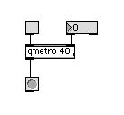
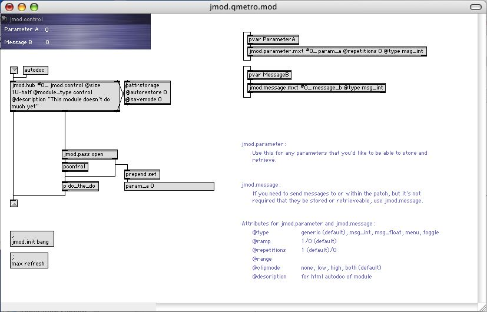
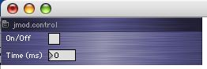
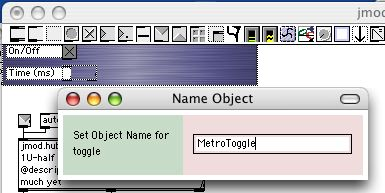
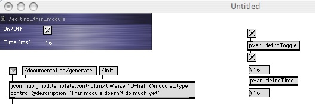
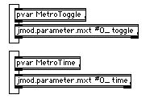
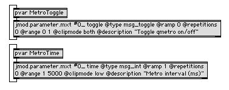
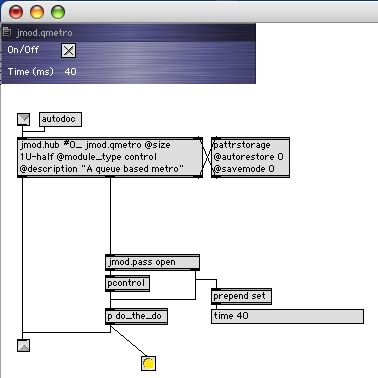
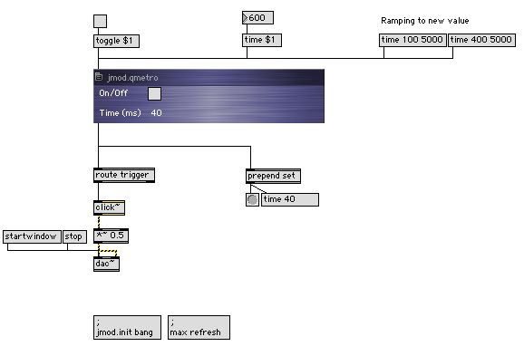

A Modular Standard for Max, MSP, and Jitter
Tutorials
| Jamoma A Modular Standard for Max, MSP, and Jitter Tutorials |
The first module that we'll set out to make, is very simple, and not to exciting. We're basicly going to turn a qmetro into a Jamoma module. Max-wise this is a very simple patch:

If we analyse what this patch is made up of, we could say that it contains:
Graphical User Interface (GUI)
In a large patch, when we run out of screen space, the only parts of the patch that we really need to be able to see, is the toggle and the number box that display the parameters and enable us to interface with them. The rest could be hidden away.
Parameters
The patch have two objects values that we might want to be able to handle as parameters:
We might want to know the state of these from remote, and we might want to be able to control these two parameters from remote.
Logical Part
The logics of this patch is really simple, it's all taken care of by one external: qmetro. In larger patches it might be made up of a combination of several externals.
Output
The bang sent on regular intervals from qmetro. In the patch above a ubutton is used to display it, but the ubutton doesn't really have to be there, it doesn't have to be a part of the module itself.
As we start transforming the patch above into a Jamoma module, what we'll be dealing with the GUI, parameters, the logical part and output one at a time.
In the Jamoma folder you'll find a file named jmod..template.control.mod (in the documentation/templates folder). Make a copy of this, and rename it as jmod.qmetro.mod.
If you're a Jamoma developer and planning to make the new module a part of the Jamoma package, your new module should be stored in one of the subfolders of library/modules, depending on what kind of module it is. If not, you should find some other dedicated place in the Max search path for your custom modules.
Once you have made yourself a copy and renamed it, open it and take a look:

If your template do not look exactly like this, try clicking at the two message boxes at the lower left of the window (;max refresh and ;jmod.init bang). Sometimes the screen do not display all elements properly when you're first loading the patch. We believe that this is an issue with bpatcher.
We'll start of creating the interface. If you look in the upper left corner of the patch, there's a small bluish part. When the module is complete, we will be using it as a bpatcher. By then all we'll need to see is this small region, sized 256 x 60 pixels, or "1U-half" in the Jamoma terminology. For more details on various sizes of modules, please refere to the guidelines.
For our interface we'll need a toggle and a number box here. We'll also rename the comments so that they make sense to us:

If you want to align to the display used for most Jamoma control modules, you could open the inspector for the number box and
If not, you could leave it as is.
Parameter handling will mainly be taken care of by a custom Jamoma "component" or abstraction named jmod.parameter. If you don't know what an abstraction is, take a look at Max tutorials 26-28. They discuss how to turn a Max patch into an object.
First we need to get the toggle and number box to communicate with jmod.parameter. We could do so using patch chords, but that would quikly turn the patch into a nasty spaghetti. Instead we'll use pvar. If you don't know pvar from before, you should take a look at the help file and the documentation of it the Max reference pdf.
We'll start of by naming the toggle "MetroToggle" and the number box "MetroTime" by selecting one object at a time and choose Name for the Object menu:

Next we create two pvar objects with the arguments "MetroToggle" and "MetroTime" respectively. You can check that the communication between the GUI objects and pvar function by connecting toggles and number boxes to the inlets and outlets of the respective pvars and test:

Now it's time for connecting the pvar objects to jmod.parameter. This is how we'll do it:

Now we're ready for some magic. If everything is working as supposed to, try turn the toggle on and of, and change the time in the interface. Any change you do should cause the message box further down in the patch (connected to the 2nd outlet of jmod.hub) to reflect the parameter change. If you double click the pattrstorage object, it should reflect the current state of the two parameters.
We now need to take a look at the arguments and attributes for jmod.parameter.
Arguments
jmod.parameter have two obligatory arguments:
Attributes
The template tries to help you remember the various attributes.
For our module the following attributes seems sensible:
jmod.parameter.mxt #0_ toggle
@type msg_toggle - it's a toggle
@ramp 0 - and it doesn't make sense to let a toggle ramp
@repetitions 0 - neither are repetitions useful
@range 0 1 - this is all the range that we need
@clipmode both - so anything outside the range is clipped
@description "Toggle qmetro on/off"
jmod.parameter.mxt #0_ time
@type msg_int
@ramp 1 - can be useful for accelerando and ritardando
@repetitions 0 - repetitions won't make any differences
to the output, so we might just as well filter them out
@range 1 5000 - most of the time the metro will be fired
within this time interval
@clipmode low - but we don't want to prevent it from being
bigger
@description "Metro interval (ms)"
Now this part of the patch looks like this:

Before we move on creating the module, it's worth noting that jmod.parameter is quite powerful. I addition of keeping thack of the current state of the parameter, it can be used for ramping to new values, clipping the range and filter out repetitions.
On a sidenote you might have noted that we always load the component as "jmod.parameter.mxt". "jmod.paramter" would work fine as well, but we've found that adding the file ending tend to speed up load time substantially (as of MaxMSP 4.5.4).
The logic part of the patch, the stuff that's actual doing it, will be tucked away in a subpatch. In the template the subpatch is named "DoTheDo", but you might want to change that for something more sensible.
You might have noticed that the 2nd outlet of jmod.hub sends out messages of the kind "time 40" or "toggle 1" as you change values in the GUI. In Jamoma, you won't be passing numbers, bangs or similar on their own. They will always be preceded by a symbol telling what parameter the value is meant for. For this reason we need some routing inside DoTheDo:

For the same reason we won't be passing the bangs straight on, but prepend trigger.
There's a few more tasks to carry out before we're done.
First we sant to change the displayed name of the module from jmod.control to jmod.qmetr. This we do by changing the 2nd argument of jmod.hub to "jmod.control". In addition we'll change the description attribute for jmod.hub.
If you want you can connect the outlet of DoTheDo to a button to check that the patch is working.

Next we want to provide a default preset for the module. Set time to 40 and toggle of, and select "Save Settings..." from the small pop-up menu in the left upper corner of the module GUI. Save the preset as "jmod.qmetro.xml" somewhere in the Max search path. Presets for standard Jamoma modules can be found in the Jamoma library/presets folder.
If you want to, you can auto-generate HTML documentation for the patch. First click the ";jmod.init bang" message box so that the module is properly intiialised, and then click the autodoc message box above jmod.hub. Save as "jmod.qmetro.html". The documentation should look something like this.
Before you start testing, make sure to remove jmod.qmetro.mod from the library/modules/control folder, so that you are sure that you will be testing your module and not the one that comes as part of the package.
Save and close your module patch, and create a new patch. Create a bpatcher object, and in the inspecter, type "jmod.qmetro.mod". Resize the bpatcher to 256x60 pixels. Add a few more objects as shown below:

Click ";jmod.init bang" to initialise, and if the display is not as supposed to, refresh the screen by clicking ";max refresh".
If you interact with the toggle and time number box in the module, you'll see that updated values are reported from the outlet of the module. You can also update the parameters by sending messages from remote. If you turn on audio in the patch, you'll be able to listen to the result as time ramps from one value to another.
A Jamoma module can be thought of as being made up of three parts:
A number of Jamoma components collaborate to make it all work together:
The module have a default preset and can be auto-documented as HTML.